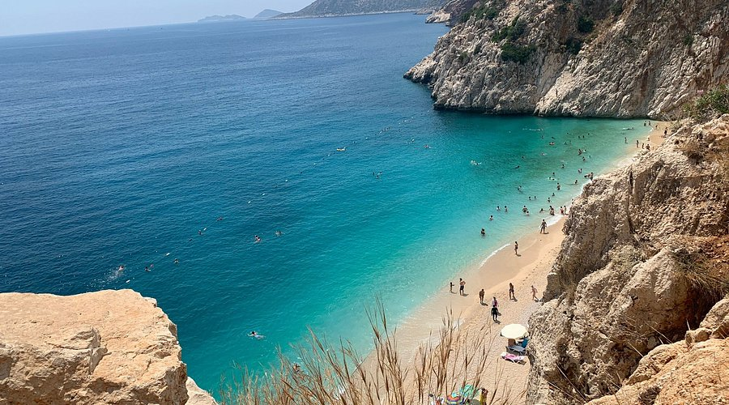
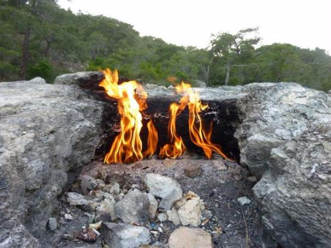

Natural Beauty
Waterfalls
- Duden Waterfall: Divided into two locations, Upper and Lower Duden. Upper Duden contains travertine formations and cave structures. Lower Duden (Karpuzkaldıran) cascades 40 meters directly from cliffs into the Mediterranean Sea.
- Kursunlu Waterfall: Features a main waterfall dropping 18 meters and a series of 7 pools connected by smaller cascades. Located within a 2-kilometer canyon, it holds the status of a Nature Park due to its rich flora.
- Manavgat Waterfall: Located on the Manavgat River. While the drop height is only 3-4 meters, its characteristic feature is the high volume of water flowing across a wide riverbed fed by karst sources.
Beaches

- Konyaalti Beach: Located on the western coast of the city center. Approximately 7 km long with coarse sand and pebble composition. The sea deepens rapidly.
- Lara Beach: Located east of the city center. Known as "Golden Sand" due to its fine sandy composition. Features a wide shoreline and shallow sea.
- Kaputas Beach: Situated on the Kaş-Kalkan highway at a narrow canyon's mouth. Known for its turquoise, cool water due to underground springs meeting the sea through sand. Accessible via 187 steps.
- Patara Beach: One of Turkey's longest beaches at 18 km. Fine sand composition with sand dunes formed by wind erosion. Primary breeding ground for Caretta-Caretta sea turtles and designated as an Environmental Protection Area.
- Cleopatra Beach: Located on the west of the Alanya peninsula. 2 km long with golden, coarse sand. Features shallow sea floor.
Natural Wonders

- Köprülü Canyon: Formed by the Köprüçay River cutting through the Taurus Mountains. 14 km long with karst canyon walls reaching heights of 100 meters in places. Holds National Park status and serves as the region's main water sports (rafting) center.
- Saklıkent Canyon: Located on the Antalya-Muğla provincial border. A 18 km long, 200 meter deep canyon carved by the Karacay River through limestone. The narrow valley floor keeps water temperature low year-round.
- Yanartaş (Chimaera): Located in Çıralı area of Kemer district. Thousands of years old natural fire sources created by methane-rich inorganic gases escaping through cracks in serpentinite rock and reacting with surface oxygen. Forms the physical basis for the ancient Khimaira legend.